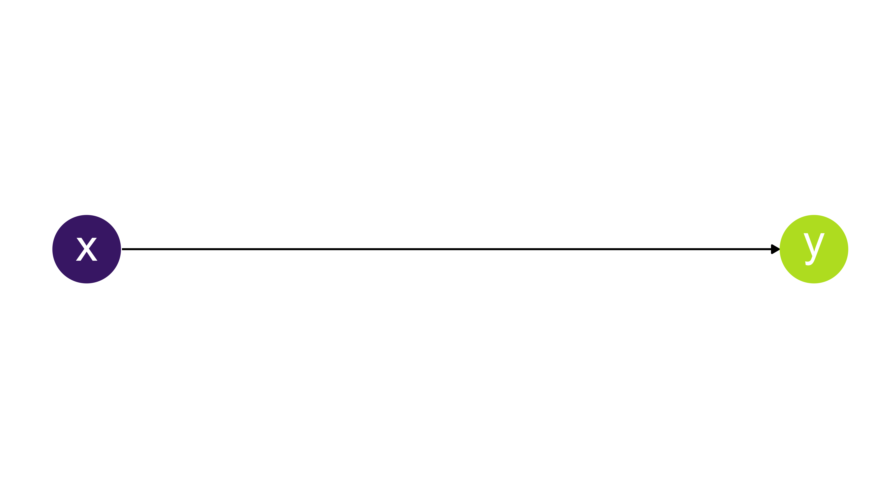
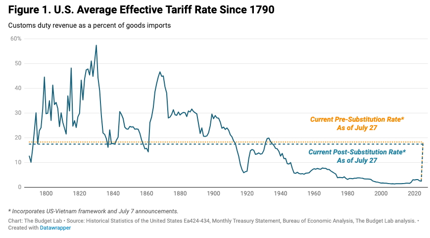
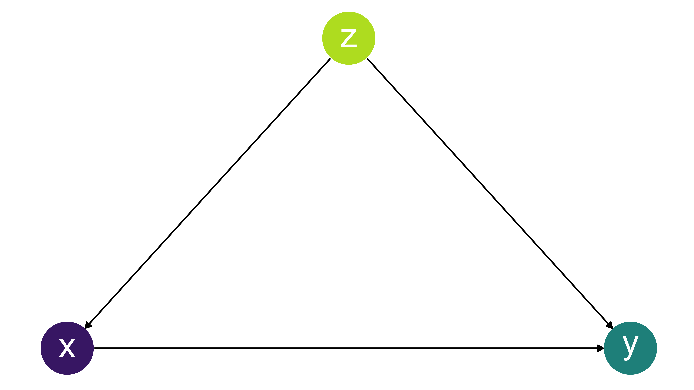
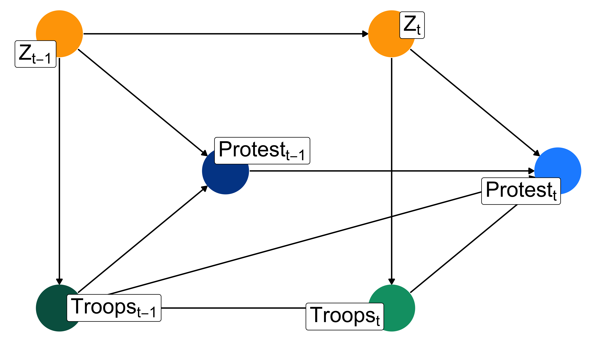

US Foreign Policy
Course Introduction
Michael Flynn
Professor
Department of Political Science
011C Calvin Hall
meflynn@ksu.edu
2025-08-22
Welcome!
Why this class matters:
International relations affects your day to day life in so many ways
Trade, migration, and investment
War and conflict
Global governance



But also…
We want to start thinking about events in a different way
Accurate description
Causal relationships
Predictive relationships
But also…
We want to start thinking about events in a different way
Accurate description
Causal relationships
Predictive relationships
But also…
We want to start thinking about events in a different way
Accurate description
Causal relationships
Predictive relationships
Or complicated

But also…
We want to start thinking about events in a different way
Accurate description
Causal relationships
Predictive relationships
Or really complicated

Boilerplate Stuff
Details
Class info:
Class: US Foreign Policy
Me: Michael Flynn
Location: Calvin 116
Time: MWF 12:30-1:20
Office hours: By Appointment
Email! meflynn@ksu.edu
Contacting Me
The best way to contact me is email! (You can also schedule in-person appointments)
Please, email me!
Don’t wait!
If I don’t respond in 48 hours send me another!
That’s a lot of exclamation points!
Contacting Me
Some things to think about:
All correspondence should be professional in tone (I’m not your “bro”)
Please address emails to “Professor Flynn” (Or something similar)
All faculty and staff appreciate your efforts to be respectful and are much more likely to go the extra mile to help you out.
Stuff you need
Stuff You Need
The syllabus—Read it!
Class format is both lecture and discussion
Required readings:
There are multiple books and articles that we’ll be reading this semester.
You’ll need to access them through K-State Libraries website
Requirements
| Grade Item | Percent |
|---|---|
| Attendance | 15% |
| Discussion | 25% |
| Exams | 30% |
| Crisis Simulation | 30% |
Academic Dishonesty and Plagiarism
Things to know:
Don’t do it
Yes, we can tell
You will fail the assignment
Possible the whole course
- Maybe suspension, too
See the syllabus for more information
Also see K-State’s student handbook online
Academic Dishonesty and Plagiarism
On the use of AI and Chatbots:
Do not use AI or chatbots to complete assignments
The use of AI and chatbots constitutes plagiarism and will result in the failure on the assignment
Other reasons not to use AI and chatbots:
They are not accurate
They are not reliable
They are not consistent
Classroom Conduct
Be Kind
Please make sure your questions and comments pertain to course materials
Be respectful of one another in your discussions
Reach out if you need help, and reach out early
Big Picture Preview
Myths of US Foreign Policy
The “national interest”
Politics stops at the water’s edge
Isolationism vs. internationalism
“Grand strategy”
US Foreign Policy less important pre-1945
Institutions vying for power